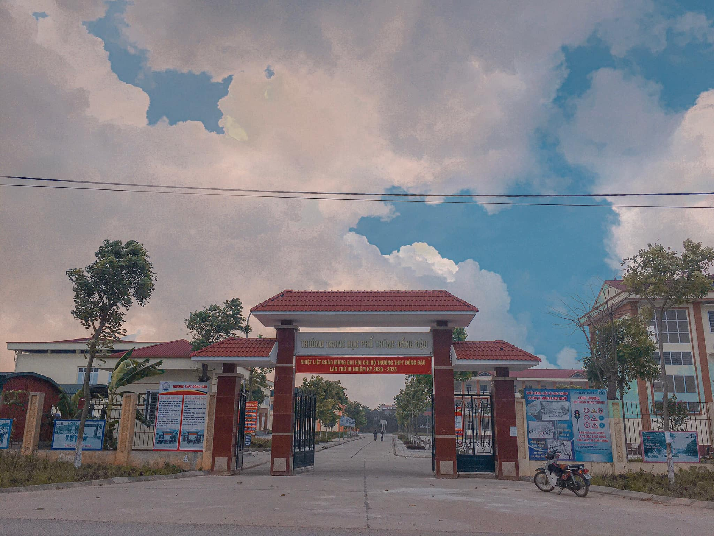
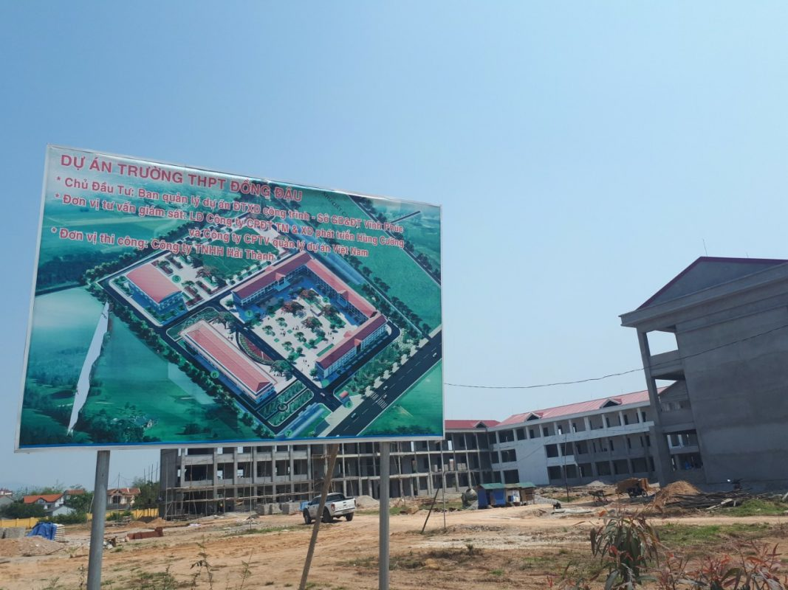
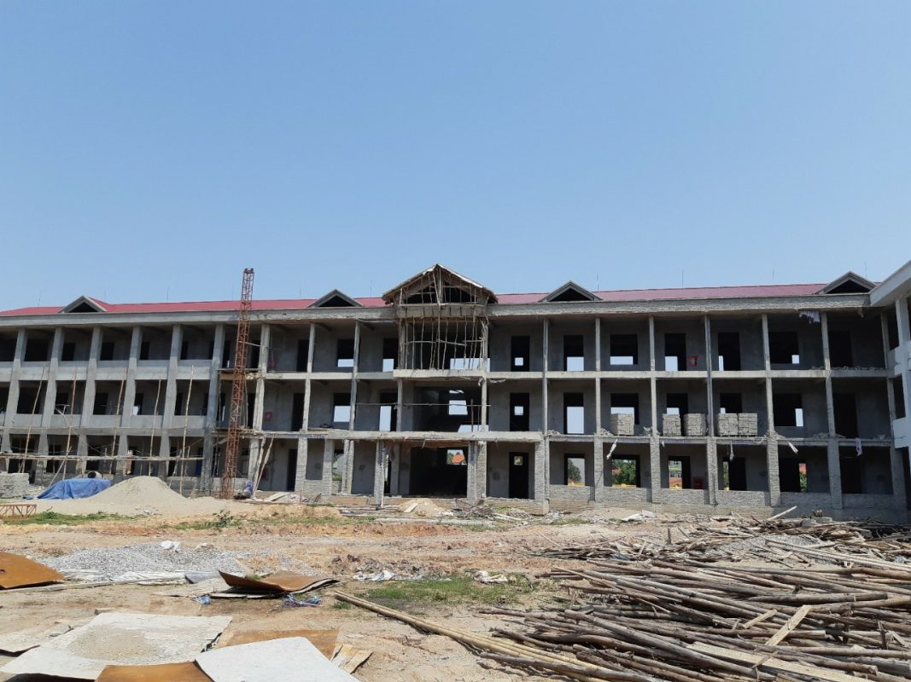
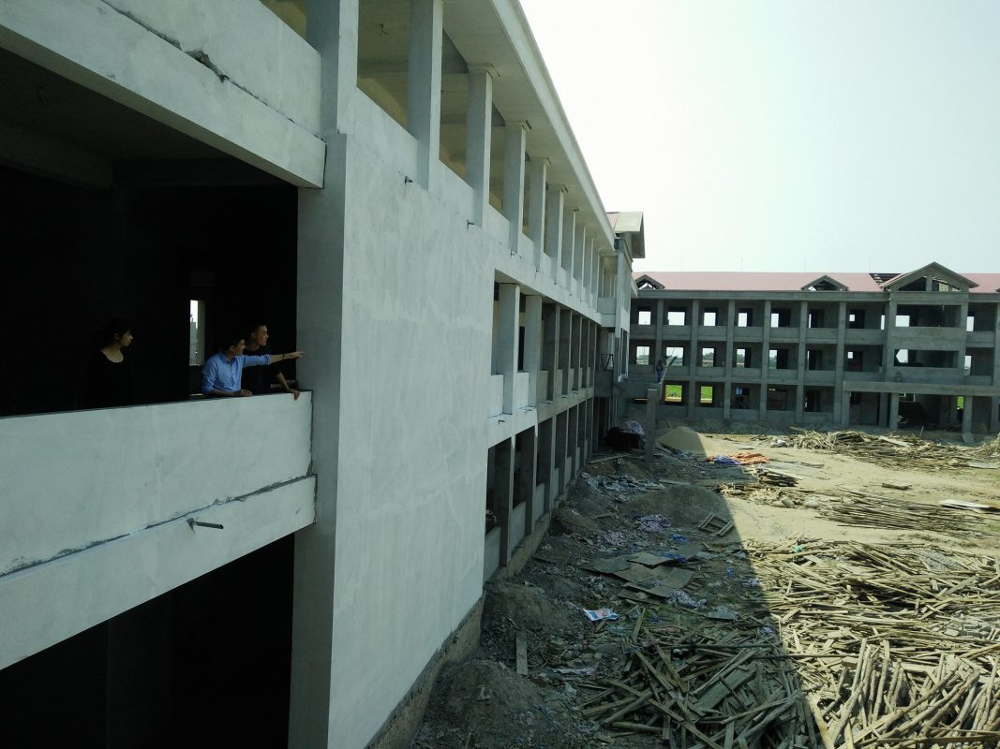

Lễ khởi công Dự án xây dựng Trường THPT Đồng Đậu
Thứ Hai, 26/12/2016

Ngày 26/12/2016, Sở GD&ĐT tổ chức khởi công Dự án xây dựng Trường THPT Đồng Đậu tại xã Trung Nguyên (Yên Lạc).
Dự án xây dựng Trường THPT Đồng Đậu do Sở GD&ĐT làm chủ đầu tư là 1 trong 10 công trình được UBND tỉnh chọn khởi công để chào mừng kỷ niệm 20 năm tái lập tỉnh. Công trình có diện tích gần 32.000 m2;

tổng mức đầu tư tối đa 88,780 tỷ đồng, gồm các hạng mục: 2 nhà lớp học lý thuyết gồm 27 phòng với diện tích sàn xây dựng hơn 3.800 m2; 1 nhà lớp học bộ môn 3 tầng, 9 phòng, tổng diện tích sàn xây dựng hơn 2.200 m2; 1 nhà điều hành 2 tầng, tổng diện tích sàn xây dựng 882 m2; 1 nhà rèn luyện thể chất, diện tích xây dựng 1.200 m2 và một số hạng mục khác...
Công trình hoàn thành sẽ tạo điều kiện thuận lợi cho việc đi lại, học tập của con em các xã phía Bắc của huyện Yên Lạc, góp phần giảm ùn tắc giao thông khu vực trung tâm huyện.

Dự kiến dự án sẽ hoàn thành và đưa vào hoạt động sau 2 năm xây dựng, đáp ứng đủ các điều kiện cơ sở vật chất của trường chuẩn quốc gia.

Các đại biểu lãnh đạo Sở GD&ĐT, UBND huyện Yên Lạc, UBND xã Trung Nguyên và Trường THPT Đồng Đậu động thổ lễ khởi công xây dựng Trường THPT Đồng Đậu
Phát biểu tại buổi lễ, đồng chí Trần Dũng Long, Phó Giám đốc Sở GD&ĐT nhấn mạnh việc khởi công Dự án xây dựng Trường THPT Đồng Đậu là sự kiện quan trọng, có ý nghĩa xã hội sâu sắc.
Đồng chí đề nghị Ban Quản lý Dự án đầu tư xây dựng công trình của Sở GD&ĐT, các đơn vị thi công, thiết kế, tư vấn giám sát tuân thủ các quy định về trình tự thủ tục đầu tư xây dựng, các tiêu chuẩn, quy trình, quy phạm kỹ thuật để triển khai thi công công trình theo đúng tiến độ và đảm bảo chất lượng; thường xuyên theo dõi, kiểm tra, kịp thời giải quyết những vướng mắc phát sinh trong quá trình thi công; đảm bảo an toàn lao động và vệ sinh môi trường theo quy định của pháp luật.
Sở GD&ĐT tạo mọi điều kiện thuận lợi để các nhà thầu triển khai thực hiện dự án; đồng thời, giám sát chặt chẽ quá trình triển khai để công trình được thực hiện đúng tiến độ, đảm bảo chất lượng và hiệu quả.
Tin, ảnh Minh Hường